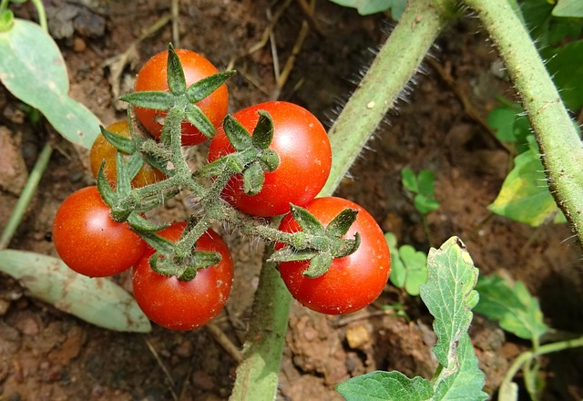

Last year was all about NEW things to try. Big things, tiny things, sweet things, and sour things!
| Name | Description | Personal Thoughts |
|---|---|---|
| Great White Tomato | Large Tomato that is fleshy but sweet | Has a mild, fruity taste. Good producer, can get over a lb per fruit. |
| Spoon Tomato | A very small tomato that grows in small groupings | Size of a peppercorn. Bursts in mouth like boba. Huge hit. |
| Cucamelon | Mexican sour cucumber. Looks like a tiny little watermelon. Grows on a vine. | Sour to sweet depending on when it's picked. Has great crunch. Eat whole. |
| Time Bomb Pepper | Round pepper, low scoville count | Not much taste or heat. |
| White Currant Tomato | Grape tomato that grow multiple on small vines. Lower in acid. | Super sweet, and rich flavor. Will plant more than one plant this year. |
| Chocolate Habanero | Higher Scoville count than regular Habanero. Smokey flavor. | A must each year. My favorite type of hot pepper. Perfect in chili to give it a smokey rich heat. |
| Sweet Onion | Sweet yellow onion used for cooking | Did not grow well. Will likely not do again. |
| Brussel Sprouts | Brussel Sprouts are brussel sprouts... | Did not grow well at all, never really established. |
| Early Girl Tomato | Classic tomato with consistent texture and flavor, ripens early | Did well, but most rotted on the vine due to traveling. |
| Strawberries | Strawberries are strawberries... | Good success with a small basket planet in the greenhouse. Did not create large amounts of fruit, probably need more plants. |